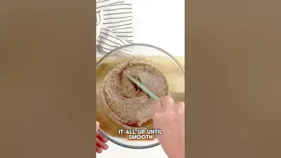

High protein vegan flaxseed pudding

Ingredients
- flax seeds
- cinnamon
- milk
- 1 tablespoon of maple syrup
- 1 teaspoon of vanilla
- berries
- bananas
- yogurt
Steps
- Just mix 3 fourths cup of ground flax seeds, 1 fourth double spoon cinnamon, 1 and 1 fourth cups of unsweetened almond milk, 1 tablespoon of maple syrup, and 1 teaspoon of vanilla extract.
- In a bowl, whisk it all up until smooth, refrigerate it for at least 3 hours, or overnight.
- When it's ready, you can add your favorite toppings like fresh berries, crushed nuts, bananas, maple syrup, or coconut yogurt that you'll have a fiber packed.
From the video's narration and on-screen text, by @thepickyeater on YouTube. Open original